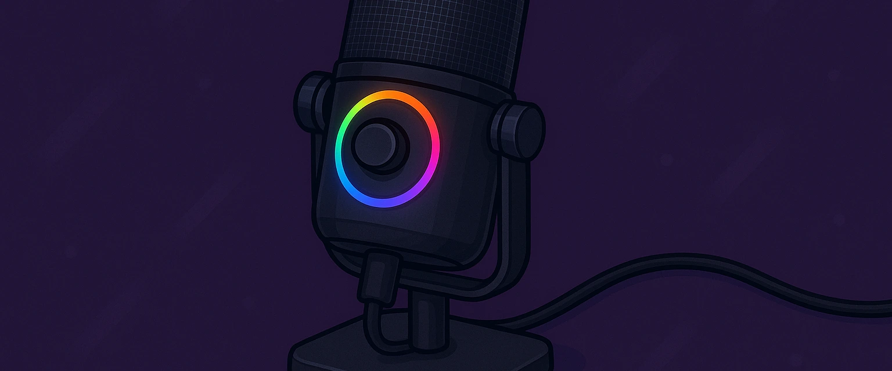
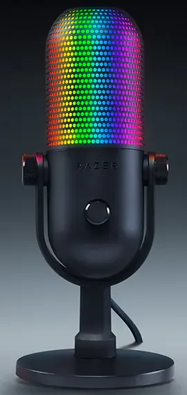
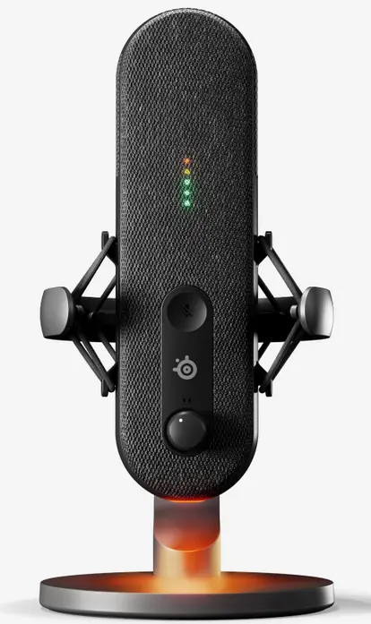
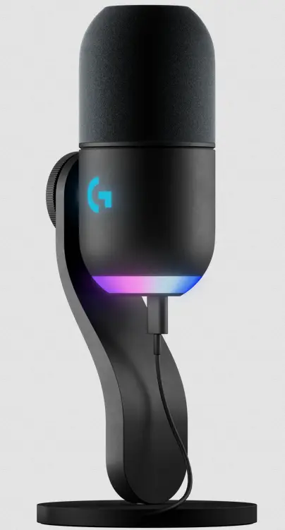
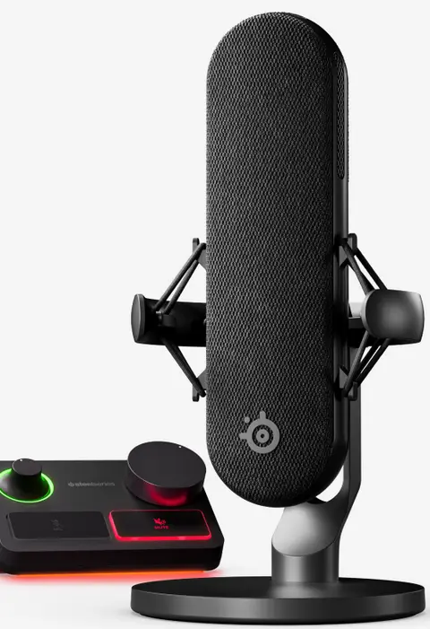

Mejores Micrófonos Gaming 2025 | Opiniones Reales | Actualizado Abril 2025
Carlos López
Editor Jefe
Hola, soy Carlos. Llevo más de 15 años trabajando como analista de productos tecnológicos, y en esta ocasión me he centrado en analizar los mejores micrófonos para streaming y gaming de 2025. Todos los modelos de esta comparativa los he probado personalmente para que tengas una visión real y honesta.
Índice de Contenidos
- ¿Qué es un micrófono gaming?
- ¿Por qué deberías comprar un micrófono gaming?
- Comparativa de los mejores modelos
- ¿Cuál compraría yo?
- Preguntas frecuentes
¿Qué es un Micrófono Gaming?
Un micrófono gaming o para streaming no es solo un accesorio más: es la herramienta que define cómo te escuchan. La calidad de sonido puede marcar una gran diferencia en la experiencia del espectador o compañero de equipo. Personalmente, creo que un buen micrófono mejora no solo la comunicación, sino también tu imagen como creador o gamer.
¿Por Qué Deberías Comprar uno?
- Calidad de audio superior: sonido nítido, sin ruidos molestos ni distorsiones.
- Diseño profesional: añade presencia y seriedad a tu setup.
- Fácil configuración: muchos modelos son plug & play.
- Compatibilidad con software: mejora tu voz con filtros o efectos en tiempo real.
Comparativa de los mejores modelos
Razer Seiren V3 Chroma
Este modelo me impresionó por su iluminación personalizable y su captación de audio clara. Muy recomendado si te importa tanto la estética como la calidad.
- Iluminación RGB sincronizable
- Patrón cardioide perfecto para voz
- Controles táctiles en el micrófono
SteelSeries Alias
Tras probarlo, noté un gran salto de calidad respecto a micrófonos de gama media. Su diseño robusto y sonido cálido lo hacen ideal para streamers.
- Resolución de audio profesional
- Estética limpia y minimalista
- Plug and play con software dedicado
Trust Gaming GXT 252 Emita Plus
Me sorprendió lo completo del pack: incluye brazo articulado, filtro pop y más. Muy completo para empezar a grabar con calidad profesional.
- Incluye todos los accesorios
- Calidad sólida por su precio
- Fácil de montar y ajustar
Logitech G Yeti GX
El clásico se renueva. Excelente calidad de grabación, controles intuitivos y diseño elegante. Una apuesta segura para cualquier setup.
- Alta sensibilidad con cancelación de ruido
- Controles de ganancia y mute accesibles
- Diseño moderno y compacto
SteelSeries Alias Pro Kit
Este kit me dejó boquiabierto. Con interfaz XLR y calidad de estudio, es ideal si quieres subir el nivel de tus grabaciones o directos.
- Conectividad XLR + interfaz incluida
- Calidad de sonido de nivel profesional
- Diseñado para streamers exigentes
¿Cuál compraría yo?
Después de probarlos todos, mi elección personal es el SteelSeries Alias Pro Kit. Su sonido es el más profesional que he probado hasta la fecha, y el hecho de que incluya una interfaz XLR lo pone en otro nivel. Si buscas destacar en calidad y presencia, este es tu micrófono.
Ver en AmazonPreguntas Frecuentes (FAQ)
¿Qué tipo de conexión es mejor para micrófonos?
USB es más sencillo y suficiente para la mayoría. XLR ofrece más calidad, pero requiere interfaz.
¿Un micrófono caro mejora mi voz?
No transforma tu voz, pero la reproduce con más fidelidad y elimina ruidos o interferencias.
¿Es necesario un brazo articulado?
No es obligatorio, pero mejora mucho la ergonomía y reduce ruidos por golpes en la mesa.